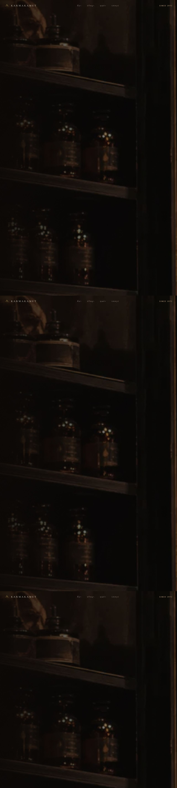

Kamakaben x Karmakamet Benchmark
Source: /Users/arithachbossabc/Documents/CreativEX2026 Chula CEA Arithach/kamakaben-karmakamet-benchmark.md
Kamakaben x Karmakamet Benchmark Note
Source reviewed: https://karmakamet-5qns9jr6.manus.space
Date: 2026-06-23
What This Reference Is
This Manus page is a Karmakamet philosophy and brand-value showcase. It should be used as a benchmark for how Thai fragrance culture can be framed with emotional depth, heritage, craft, and memory.
This is not a direction to copy Karmakamet. Kamakaben must keep its own platform identity: user participation, scent learning, memory scoring, passport entries, and global Thai scent culture.
Visible UX/UI Structure
- Sticky top navigation with four anchors:
- ที่มา
- ปรัชญา
- คุณค่า
- บทสรุป
- Hero proposition:
- Main line: "กลิ่น คือภาษาที่เชื่อมเราเข้ากับความทรงจำ"
- CTA: "เริ่มการเดินทาง"
- Mood: dark, warm, intimate, premium, memory-driven.
- Core content sections:
- "รากจากภูมิปัญญาสมุนไพรสู่ลมหายใจของกลิ่น"
- "สี่เสาหลักที่หล่อหลอม จิตวิญญาณของแบรนด์"
- "ความงามที่แท้จริงดำรงอยู่แล้วในทุกสิ่ง"
- "มากกว่าแบรนด์เครื่องหอม คือ แบรนด์ไลฟ์สไตล์เชิงปรัชญา"
- Four value pillars:
- หัตถศิลป์
- เนื้อแท้และความจริง
- มรดกทางวัฒนธรรม
- ลูกค้าคือหัวใจ
- Image language:
- Night store ambience
- Herbal apothecary drawers
- Fragrance bottle with lotus mood
- Hand-poured candle craft
What Kamakaben Should Learn
1. Make Scent Feel Philosophical
Karmakamet makes scent feel like memory, belief, and inner life. Kamakaben should keep this emotional seriousness, but convert it into an interactive learning system.
Kamakaben translation:
- "กลิ่นคือภาษา" becomes "กลิ่นคือ interface ของความทรงจำและวัฒนธรรมไทย"
- Philosophy becomes measurable UX: Memory Fit, Emotional Shift, Cultural Recall.
2. Anchor Every Abstract Claim In A Visual Object
The Manus page uses physical objects to make abstract ideas credible. Kamakaben should do the same with:
- 50ml trial bottle
- formula card
- scent passport stamp
- scent territory access card
- workshop worksheet
3. Keep The Premium Mood, Add Participation
Karmakamet feels curated and contemplative. Kamakaben should feel premium too, but with an extra participatory layer:
- Users choose an image.
- Users smell a territory.
- Users score the match.
- Users save a passport entry.
- Users create the next data layer of Thai scent culture.
4. Use Pillars, But Make Them Operational
Karmakamet pillars are brand values. Kamakaben pillars should become product rules:
| Karmakamet Benchmark | Kamakaben Product Translation |
|---|---|
| หัตถศิลป์ | Show the ritual and formula logic without exposing secret recipes |
| เนื้อแท้และความจริง | Use real Thai materials, places, rituals, and stories |
| มรดกทางวัฒนธรรม | Connect every scent territory to Thai cultural learning |
| ลูกค้าคือหัวใจ | Let users write memory entries and shape the scent archive |
UI Moves To Apply Next
- Add a stronger full-bleed or image-led hero for Kamakaben once original/generated brand imagery exists.
- Make
#ux-labthe bridge between philosophy and product behavior. - Add "Four Product Principles" below Scent Lab:
1. Memory Before Product
2. Ritual Before Purchase
3. Thai Knowledge After Scent
4. User Archive As Brand Asset
- Add a small benchmark reference in the UX Research Booklet resource list.
- Keep Karmakamet spelling exactly as
Karmakamet.
Differentiation Statement
Karmakamet is a Thai fragrance and lifestyle brand built around memory, craft, and philosophical beauty.
Kamakaben should become a Thai scent culture platform: a participatory learning and UX system where people around the world smell, score, record, and share Thai cultural memory through scent.
Captured Asset
Local screenshot:
downloads/karmakamet-manus-benchmark-screenshot.png
Captured Asset
